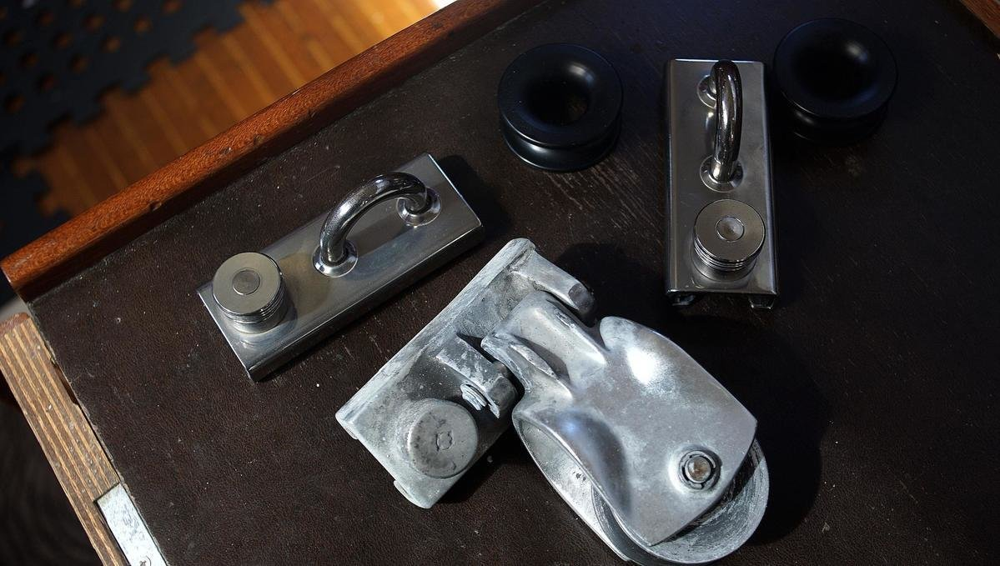
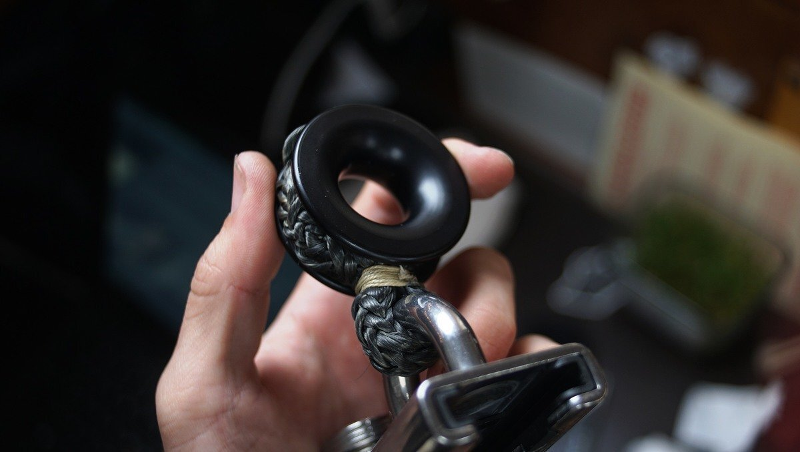
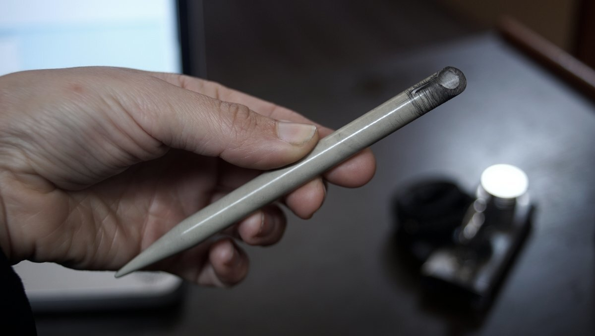
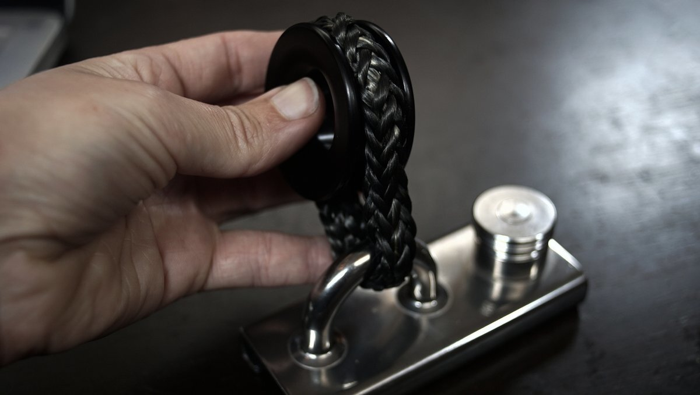
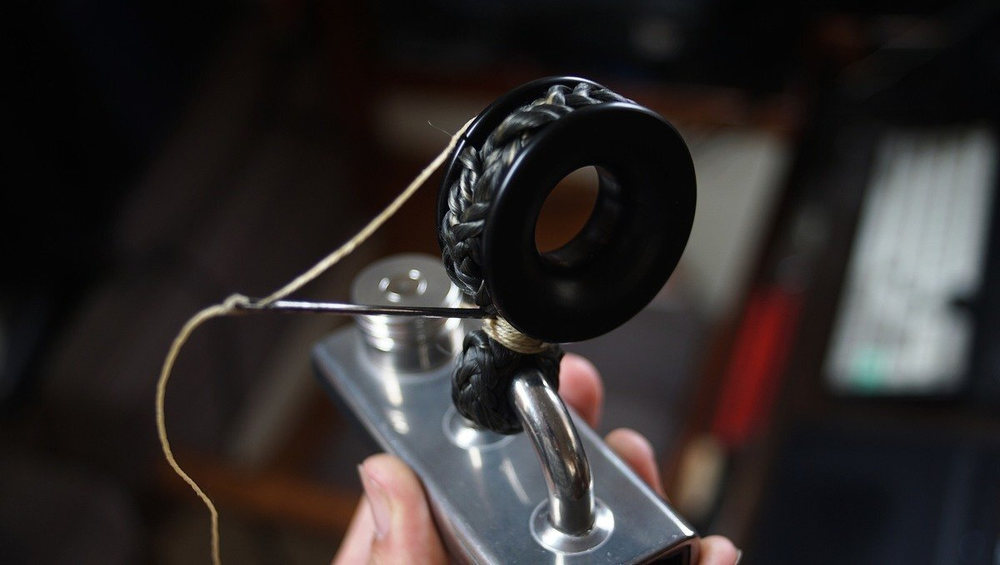

jib cars
2021.05.13
Victoria BC, Canada
Click below dates for more recent updates:
We have replaced our old aluminum jib cars, which had developed cracks around the pivot, with a simple dyneema loop around a frictionless sailing ring. Dyneema is a ultra-high molecular weight polyethylene(UHMWPE) which has many uses, and it is now commonly used to rig sailboats(or as lifelines). It is lightweight, and strong as hell.
When came time to replace our jib cars we did not have a ton of options, we can't machine parts ourselves because we don't have access to a workshop. Approaching metal workers was a no-go either, they were too busy with higher paying contracts to take on something so small (it's not as worth it for them). We tried sourcing other ready-built jib car designs, like the twin sheet lead blocks by Schaefer Marine, but no local marine store had any the models we wanted in stock because of covid-related supply chain issues. We were hesitant to buy those jib cars anyway because of the associated price tag of $300USD(per jib car...!).
We gave up on sourcing ready-built designs, and got some frictioness sailing rings(sized to our jib sheets), a length of dyneema, and two 3.17cm (1 1/4") T-track spring-stop lined eye slides by Schaefer Marine. The slides are stainless steel but lined with nylon inserts so there's no metal to metal contact.
Safety. Carrying lengths of dyneema, a good fid, and some frictionless rings is a good backup in case an important piece of hardware fails. It is possible to rig something up without using complex tools(only requirement is hard labor and a fid).
Braid
We followed this tutorial on how to braid the loop of dyneema to make a end-to-end Möbius Brummell Splice. We made a fid(a hollow spike for use in ropework) from an old knitting needle. We have secured the loop around the sailing ring and on itself, with a few stitches of waxed thread.
Looking to splice other types of ropes? See some splicing tutorials from Nautilus Braids.
  2023.05.08
Victoria BC, Canada
We have used these jib cars for a few summers now, and they are doing very well! In the off season, we take the jib cars off off the track and keep them indoors (to prolong their life).
We broke the tip of our plastic fid recently, while trying to redo a splice for our chain to rope anchor rode. Perhaps it's time to seek out a sturdier design.